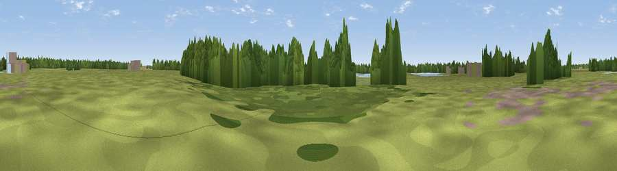

Viewpoint near Tattershall Thorpe
#43028 in England · top 80% of its area beats it · near Tattershall ThorpeThe view, rendered

A 360° render of this exact spot computed from the terrain model, tree cover and land cover — summer colours, afternoon light, calibrated against photographs of famous viewpoints. Real trees, hedges and buildings will differ in detail.
The panorama
Grey silhouette: terrain skyline in each direction (720 bearings, Earth curvature and refraction included). Dashed green: skyline with trees (+15 m) and buildings (+8 m) as obstacles. Blue strip: how far the ground is visible on each bearing.
Where the view opens
Wedge length = distance to the farthest visible ground on that bearing (vegetation-aware). Rings at 10, 25 and 50 km.
What fills the view
59% grassland · 23% woodland · 12% cropland · 3% wetland · 2% water ·
Angular shares of the visible panorama (visual magnitude), not map area. Landscape diversity 0.49 (0–1 Shannon).
Key numbers
More beautiful places nearby
The staircase of upgrades: each row has a higher view potential than everything closer. Driving times are estimates from straight-line distance, calibrated against real road routing — check an actual route before setting out.
| Place | Direction | Drive | Score |
|---|---|---|---|
| Fox Hill | NE · 2 km | ~5 min | 32.2 |
| Langton Hill | NNE · 9 km | ~18 min | 37.7 |
| Hameringham Top | ENE · 11 km | ~21 min | 40.6 |
| Viewpoint near Baumber | N · 12 km | ~23 min | 44.8 |
| Round Hills | NE · 13 km | ~24 min | 51.1 |
| Grantam Point | E · 15 km | ~26 min | 58.0 |
| Viewpoint near East Keal | E · 16 km | ~29 min | 66.0 |
| Viewpoint near Claxby | NNW · 36 km | ~54 min | 71.5 |
53.13493, -0.18855 · source: osm viewpoint · position refined by local search. Computed location — check access rights before visiting.